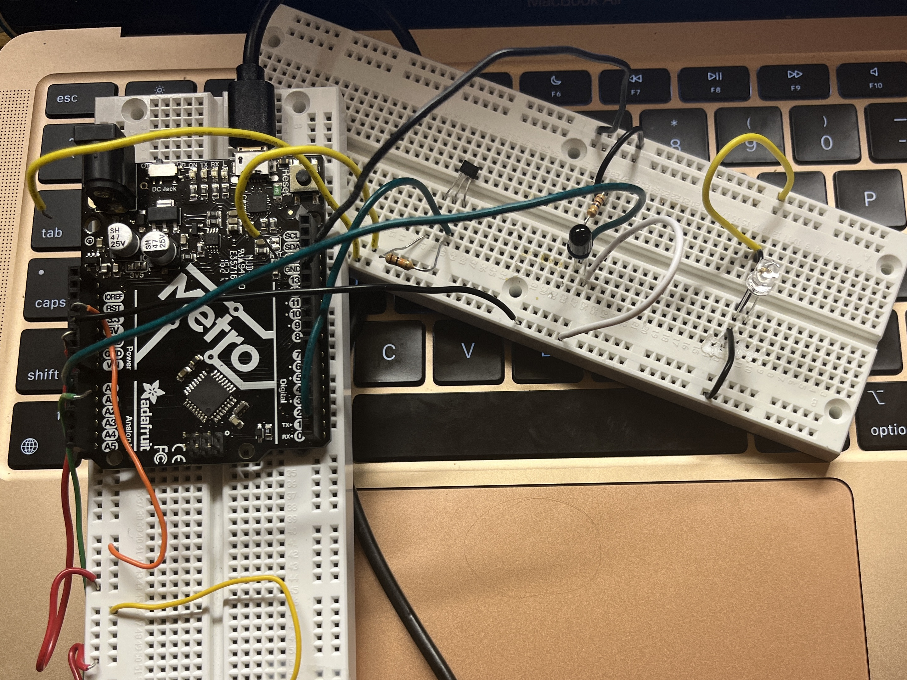

<div class="container-fluid">
<h3 style="text-align: center;"> Week 6: Electronic Input Devices </h3>
<h4 style="color: black;background-color:#6EDCF7;"> Lots of Struggling </h4>
<p> This was a bit of a tough week for me -- I kept getting stuck but because I was in tech week for a show, I wasn't able to attend any office hours and for the first time I had to try to complete my assignment without getting any troubleshooting help from wiser brains. So while this week was more frustrating than successful, I do think it was a valuable exercise in patience and (attempted) problem solving on my own. I also think this week was a bit of a shift for me as we enter the part of the course that I find far less intuitive. I have much more experience and comfort in the hardware/building world than software/programming so this week definitely showed me I will need to step up my game as we move deeper into device land! </p>
<h4 style="color: black;background-color:#6EDCF7;"> Capacitive Sensors </h4> <img src="../06/capacitive.GIF" alt="Capacitive Sensor Gif" style="float:right;width:200px;height:auto;">
<p> First, I was able to get the capacitive sensors working as we learned in class to act as a close proximity sensor when the 2 copper plates are brought together. Because I was able to follow a tutorial and use an example code I wanted to take the time to break it down and make sure I could follow the logic of how the code and sensors are working. The leap from using tutorials and example codes to writing my own still feels very intimidating so hopefully studying the codes we're given can help me once I really have to write them fully myself. But overall I really enjoyed the capacitive sensor method and I’m excited to use this more for future projects. </p>
<h4 style="color: black;background-color:#6EDCF7;"> Hall Sensors </h4>
<p>For this week's assignment I wanted to work on something I could use for my final project. One of the more optimistic ideas I have for my final project is to have some kind of proximity sensor built in to whatever holds my paintbrush so that the machine can self-sense when it is going to make contact with a canvas. I am also hoping the brush will be able to rotate and paint at different brush angles, so I wanted to make sure the angle changes wouldn't cause a problem for whatever sensor I'm using. At first I thought it might make sense to use an IR sensor but I talked to Nathan and he suggested I try using hall sensors. He explained that if I made a grid of hall sensors, the magnetic field could measure both distance from the brush (with a magnet attached) as well as the exact angle of the brush.
</p>
 So, I eagerly jumped into working with hall sensors, but it was not long at all before I was struggling and couldn’t make any progress. I tried following different <a href="https://circuitdigest.com/microcontroller-projects/arduino-hall-effect-sensor ">tutorials</a> and <a href="https://circuitdigest.com/microcontroller-projects/arduino-hall-effect-sensor ">guides</a> I found online, some written to print when the magnet is detected, some to light an LED, and yet none of them seemed to work quite right.
I tried to calibrate the sensor using cardboard squares as was suggested in class but I don't think I was doing it right because after many attempts at troubleshooting, I still couldn't get the sensor to work. I know that the sensor can only read on a specific side so I made sure to test both faces but to no avail. I also tried different magnets in case it was something with the strength of the magnet but they all had the same problem.
I was confused because it sometimes seemed to detect the magnet but it was never consistent enough to seem accurate. This is why I think it must have been a calibration issue, but I'm not sure what exactly I was doing wrong (and as I said above my many failed attempts were always in my room alone so even if it was a super obvious, simple mistake, I had no clue).
Here are some videos of me being very confused:
<center>
<video width="200" height="auto" controls>
<source src="hallfail1.mp4" type="video/mp4">Your browser does not support the video tag. </video>
<video width="200" height="auto" controls>
<source src="hallfail2.mp4" type="video/mp4">Your browser does not support the video tag. </video>
<video width="200" height="auto" controls>
<source src="hallfail3.mp4" type="video/mp4">Your browser does not support the video tag. </video></center>
<p>As you can see in the third video, I tried taping a magnet to a paintbrush both to imitate what the intended end result would be and to give me more control over the magnet movement, but it was still sensing in such an inconsistent and unpredictable way.
After many hours stuck on the same problem without making any progress, I decided it was probably best to give up for now and wait to try again with hall sensors until I could ask for help. So again, overall this week was a bit sad and I wish I had more to show for the time I spent, but I am at the very least feeling invigorated to improve my skills in this domain so that I can better troubleshoot on my own next time! </p>